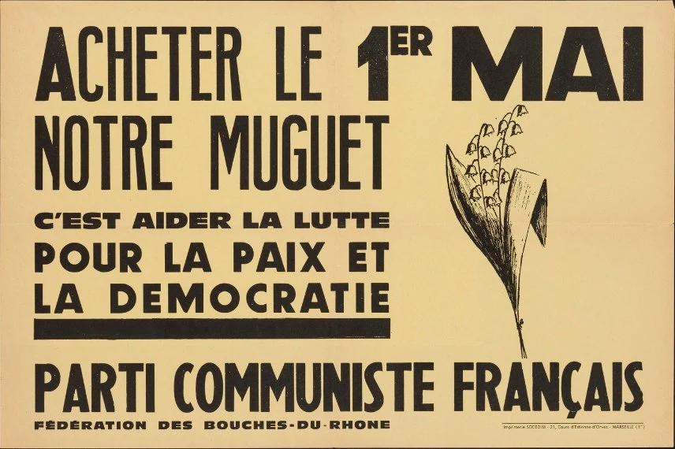

Publication sur X
1er Mai. Le muguet pour la paix et la démocratie
Date de publication sur X · 1 mai 2022
Texte de la publication sur X
Bonne #FeteDesTravailleurs ✊ https://t.co/PKk0Oo8iyp

Sources
PCF 79 · @79Parti sur X · AR-0005-TW-1520780036395122691
À lire aussi · Le 1er Mai et le muguet militant